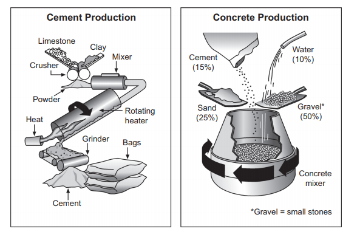

Task 1 — Cement and concrete making process
The diagrams below show the stages and equipment used in the cement-making process, and how cement is used to make concrete for building purposes. Summarise the information by selecting and reporting the main features, and make comparisons where relevant.

The diagrams illustrate how cement is manufactured and how it is then combined with other materials to produce concrete for the building industry.
Overall, cement-making is a linear process involving five main stages, from crushing raw materials to packing the finished powder into bags. By contrast, concrete is made in a single step, by mixing cement with three other ingredients in fixed proportions.
To begin with, limestone and clay are fed into a crusher and broken down into powder. This powder is then passed through a mixer before entering a rotating heater, where heat is applied to it. After leaving the heater and cooling down, the heated mixture is ground into fine cement by a grinder, and this cement is finally packed into bags, ready for use.
Concrete is produced in a concrete mixer, which rotates in order to combine its ingredients thoroughly: cement (15%), water (10%), sand (25%) and gravel (50%), with gravel meaning small stones. Notably, gravel alone makes up half of the total mixture, whereas cement and water together account for only a quarter of it.
TA / TR：完整覆盖两张图：水泥制造 5 步线性流程（破碎 → 混合 → 旋转加热 → 研磨 → 装袋），以及混凝土配方四原料及比例（水泥 15% / 水 10% / 砂 25% / 砾石 50%）；砾石注释（small stones）点到；比例对比（gravel 占一半 vs 水泥和水共占四分之一）来自原图数据，无杜撰数字。
CC / LR / GRA：四段式（Introduction → Overview → 水泥流程 → 混凝土配方）；衔接词 Overall / By contrast / To begin with / Notably 推进；LR 使用 crushed / ground / rotates / fixed proportions 等流程词汇；GRA 被动语态（are fed / is ground）与比较结构（whereas / account for）并用，长句约 25 词。
limestone— 石灰石crusher— 破碎机rotating heater— 旋转加热器grinder— 研磨机gravel— 砾石（small stones）concrete mixer— 混凝土搅拌机fixed proportions— 固定配比account for— 占（比例）